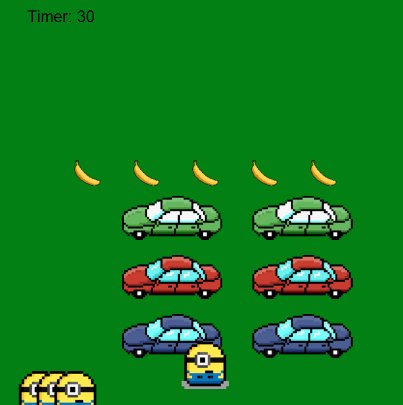
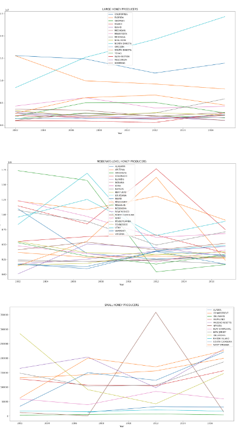
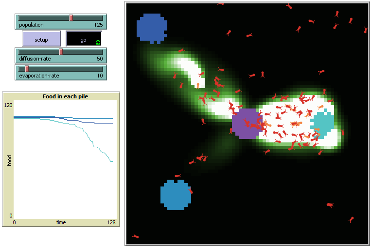
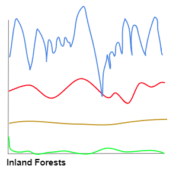

☆ This is my Portfolio Page! ☆
Cupcake Maker: My first project! Interactive text-based game where players can build their own customizable cupcake with various options for cake flavor, frosting, and toppings.

Crossy Minion: Based on the popular Crossy Road game. Player uses arrow keys to navigate minion across the road. The goal is to collect all 5 bananas within the 30 sec timer while avoiding getting hit by cars. The minion loses a life after each collision with a car, and losing all 4 lives results in game over.
Temple Run: My partner and I created a temple run game, featuring a character who runs through the jungle while collecting coins and dodging enemies. The game is based on a "cop chase" game with a similar objective, but we chose to add different obstacles, backgrounds, and animations of the runner character. Each coin = 10 points on the counter, and the final score is displayed on a leaderboard.

3.2.4 Project: We created 3 graphs to examine the patterns of honey production in the US over the past several years, across large, medium, and small states. Using groupby statements and sums, we validated the totals of our data.

Netlogo: My partner and I analyzed a simulation modeling how ants use chemicals to follow each other when foraging for food. When an ant picks up food, it also drops a chemical trail that other ants follow.


